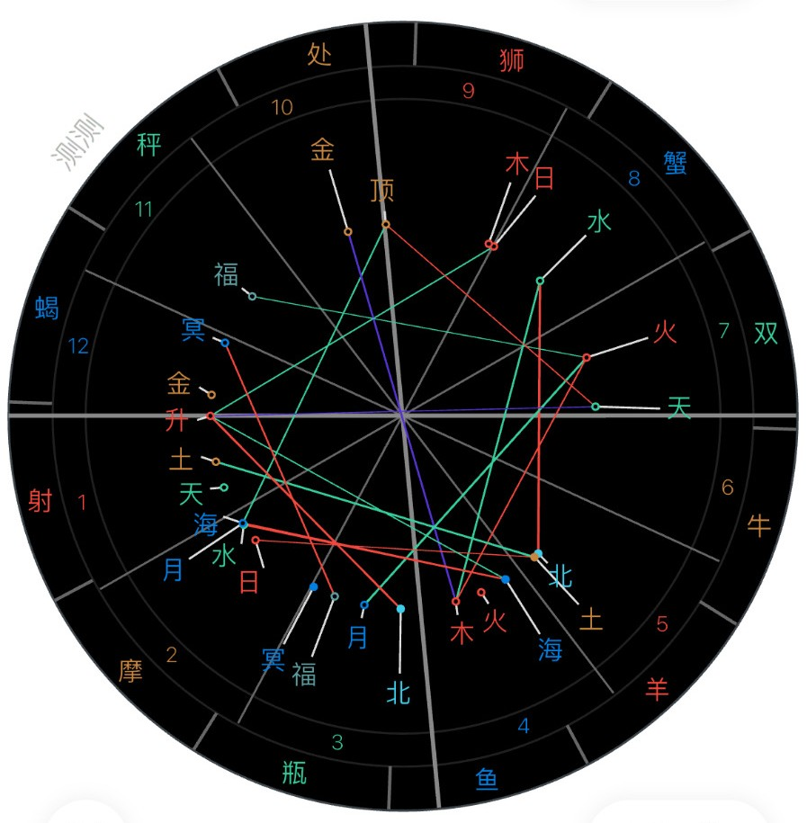
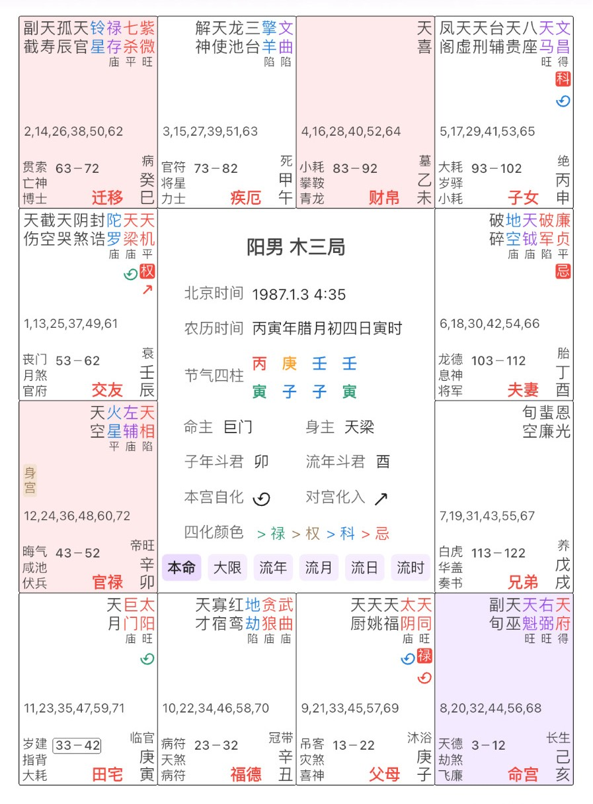
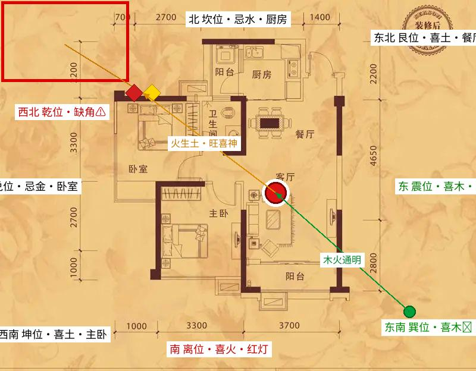

一、八字分阶段解命与健康提醒
你的命局
四柱 丙寅 庚子 壬子 壬寅（男·南宁真太阳时）。真太阳时校准：北京时间 05:26 出生 → 南宁时差约 46.8 分钟 + 真太阳时平差 → 寅时。
日主壬水（阳水，如江河大海），格局为「阳刃格」——月支、日支双刃当令（子水为壬水帝旺之地），日主极强。水旺、五行缺土。寅卯空亡。
大运：甲辰（31–41 / 2018–2028）→ 乙巳（41–51）。
喜用神：木（泄水）、火（调候生财）、土（制水筑堤）；忌神：金（生水）、水（助劫）。
气质属「食神模式」（慢火炖汤）——内敛、爱钻研、沉得住气，靠才华（食神）细水长流地变现。
四柱逐柱解读
| 柱 | 干支 | 十神 | 白话含义 |
|---|
| 年柱 | 丙寅 | 偏财坐食神 | 祖上/早年底色：财星透出、食神生财——早年身边有资源与机会，但食神主"细水长流"，需慢慢经营。 |
| 月柱 | 庚子 | 偏印坐劫财 | 父母/环境：偏印主钻研、非主流路子（研究命理/交易正合此象）；劫财旺主同辈助力但易破耗，合作留一分心。 |
| 日柱 | 壬子 | 日主坐劫财 | 自身/配偶：壬水坐子水，身强之象——主观、独立、不吃亏；配偶宫劫财，感情里各自独立、需多沟通。 |
| 时柱 | 壬寅 | 比肩坐食神 | 晚年/子女：比肩帮身、食神吐秀——中晚年食神发力、才华变现，是"大器晚成"的时柱依据。 |
分阶段解命
| 早年（40岁前） | 运蹇事难谋：做事易碰壁、怀才不遇；钱财攒不住（群劫夺财），易因请客、借钱、冲动投资而流失；易因朋友同事合伙而破财；感情主观性强、争执时固执。此阶段是积累期，本事在身、不急于亮。 |
|---|
| 中年（40–50岁） | 渐有财源如水流：运势逐步打开，阳刃格最喜中年走火土大运来制刃暖局——能力与平台真正结合，是黄金启动期。 |
|---|
| 晚年（50岁后） | 名利一齐收：先苦后甜、大器晚成，把前半生的积累转化为后半生的收成。 |
|---|
事业与财务原则
| 路径 | 靠专业技能（寅木食神）变现，走木火通明路线：教育、设计、技术、文化传媒、策划咨询、内容创作、餐饮（火）等。 |
|---|
| 避免 | 金融投机、水产物流等金水行业、工厂流水线、纯体力岗——水旺忌金水，投机最易"群劫夺财"。 |
|---|
| 财务铁律 | 收入到账当天即划出 30%–40% 做定期/实物/不动产，交信任家人保管（物理隔离）；不为他人担保；把消费转化为资产。 |
|---|
| 合伙 | 白纸黑字写清权责，不做口头约定；宁可让利给大平台，不和小兄弟分利；把"竞争"变"竞赛"，用公开指标说话。 |
|---|
婚姻相处建议
| 引入"木" | 每周一起散步、爬山、短途旅行（木主运动疏通），或共同学习新技能。 |
|---|
| 文字沟通 | 争执时先离开现场、用文字沟通（水主智，文字比语言更理性）。 |
|---|
| 示弱法则 | 把指责换成"我需要你的帮助"——示弱是壬水最强的武器。 |
|---|
| 家庭规则 | 吵架不过夜、轮流做决定。 |
|---|
改名参考（洲 → 靖）
为什么方向合理
「洲」含水旁——对水旺忌金的命局，等于火上浇油、加重水势。
「靖」含立（木）与青（木火通明之象）——对应命局喜木（泄水）、喜火（调候）的用神取向。
结论：方向为有利调整，符合"喜木火、忌金水"的命局需求。改名仅作命理参考，实际改名还需综合数理、家人意见与实际使用习惯。
健康提醒（水旺克火 · 水多木漂）
| 心脑血管 | 水克火，先天心阳不足、血液粘稠度易偏高，遇冷血管收缩剧烈——首要防线，防血压波动、头晕心悸。 |
|---|
| 肾与泌尿 | 双刃子水，肾气过盛却不固：腰膝酸软、夜尿频繁、耳鸣——口渴再喝、小口温饮，晚 9 点后少喝水。 |
|---|
| 肝胆筋骨 | 寅木被双子水浸泡：晨起手指僵硬、偏头痛、胆囊问题；南宁湿热易痛风（尿酸）、湿疹——少吃海鲜+啤酒。 |
|---|
| 脾胃 | 缺土水旺土溃：饭后易腹胀、反酸、大便不成形（寒湿困脾）——山药、薏米、茯苓常备。 |
|---|
| 长期调养 | 穴位：内关（护心）+ 足三里（健脾）+ 太冲（疏肝）；运动只做八段锦、瑜伽、散步（忌举重冲刺）；每日晨服 3 片醋泡生姜升阳气；每年冬至前后主动体检心脑血管指标。 |
|---|
| 心态 | 贪、怕、冲动是阳气最大的内耗，稳即养生。 |
|---|
| 申月特别（8月） | 补火补土抗申金：艾灸关元/足三里 + 山药薏米；驿马逢冲，出行提早不掐点。 |
|---|
经络穴位养生（白话找法 · 按命局喜忌）
| 穴位 | 经络 | 白话找法 | 作用 | 操作 |
|---|
| 足三里 | 胃经 | 膝盖外侧凹陷（外膝眼）向下约四指宽、胫骨外一横指处 | 健脾和胃、补气血（命局缺土→养脾胃第一穴） | 艾灸为主，每周 2–3 次 |
| 内关 | 心包经 | 手腕横纹向上约三指宽，两筋之间 | 护心、宁神（命局水克火→护心要穴） | 按揉，心慌/紧张时按压 |
| 太冲 | 肝经 | 足背第一、二脚趾骨结合部前方凹陷处 | 疏肝解郁、平肝火（水多木漂→疏肝要穴） | 按揉，生气/郁结时重点按 |
| 关元 | 任脉 | 肚脐正下方约四指宽 | 补肾阳、培元固本（喜火→补火要穴） | 艾灸，申月补火重点 |
| 命门 | 督脉 | 后腰正中、与肚脐相对处 | 温补肾阳、壮腰 | 艾灸，秋冬温补重点 |
| 涌泉 | 肾经 | 脚底前 1/3 凹陷（蜷足时足心最凹处） | 引火归元、安神助眠 | 睡前按揉或温水足浴 |
十二节气月养生（按月 · 壬水命局 喜火土木 / 忌金水）
| 节气月 | 时节特点 | 养生重点 |
|---|
| 寅月（2月） | 春木萌动，水尚寒 | 疏肝理气，少酸多甘，晨起拉伸；夜卧早起防春困，情志舒展；可温和艾灸足三里，忌大汗伤阳 |
| 卯月（3月） | 肝木最旺 | 养肝为主，戒怒，踏青舒气；多食青蔬芽菜，少油腻；保证睡眠，目得血而能视 |
| 辰月（4月） | 湿土当令，脾易受困 | 健脾祛湿：山药薏米粥常备；少生冷甜腻，防湿气内停；午后散步利湿，衣物防潮 |
| 巳月（5月） | 火气渐升，喜神得令 | 养心为先，午时小憩；忌大汗耗阴，适量补水；精神佳但防心火过旺易怒 |
| 午月（6月） | 火最旺，命局所喜 | 养心安神，午觉必睡；忌贪凉饮冷过度；顺势规划，能量充足 |
| 未月（7月） | 暑湿燥土，脾胃承压 | 健脾化湿，饮食清淡；防暑补水，避开烈日；绿豆冬瓜利湿，莫贪冰 |
| 申月（8月） | 金旺生水，忌神得令 | 补火为要：艾灸关元/足三里；健脾土：山药薏米，忌寒凉生冷；早睡养肺，整体降档保守 |
| 酉月（9月） | 金最旺，凉燥渐起 | 润肺防燥，温饮忌冷；仍避寒凉，适当温补；早睡收敛神气 |
| 戌月（10月） | 燥土渐寒，阳气收敛 | 温补脾肾，艾灸命门；添衣防感冒，避夜寒；少辛增酸，润燥 |
| 亥月（11月） | 水旺为忌，冬藏伊始 | 补肾藏精，防寒保暖；少房事，温水足浴；温养为主，勿耗散 |
| 子月（12月） | 水最旺，一阳初生 | 养藏为本，早睡晚起；冬至前后温补，避寒就温；静心少虑，护阳气 |
| 丑月（1月） | 寒湿地冻，隆冬 | 补肾阳，食温热（姜枣羊肉）；避寒湿，护关节；少动多藏，养精蓄锐 |
命理推演与养生为个人经验参考，均非医学建议；称骨口径差异见第五板块说明。
二、紫微命盘十二宫
实盘排盘对照（测测数据）

↑ 圆形星盘：十二宫位、五行属性（金木水火土）、星曜连线、五行关系网（红/绿/蓝线）

↑ 紫微历方格详图：阳男木三局 · 北京时间 1987.1.3 4:35 · 丙寅年腊月初四日寅时 · 命主巨门 身主天梁 · 子年斗君卯 流年斗君酉 · 四化颜色 禄>权>科>忌
琥珀色 = 命宫（你自己）。盘面按传统方位：午上子下；十二宫自命宫起逆排（亥命→戌兄弟→酉夫妻→申子女→未财帛→午疾厄→巳迁移→辰交友→卯官禄→寅田宅→丑福德→子父母）。
三、十二宫白话解释
亥 · 命宫
你自己
性格底色、人生基调。亥属水 → 与八字壬水偏旺互相印证：内敛、灵活、能沉住气。
卯 · 官禄
事业
工作、事业、名声。身宫在此 → 一生重心在事业
四、这张盘告诉你什么
命宫亥（水）
水主流动、灵活、深沉。与你八字「壬水偏旺」互相印证——气质内敛，遇事能沉住气，适合慢节奏、深度钻研的路子（和你的食神模式一致）。
身宫卯 · 官禄 → 一生重心在事业
身宫代表"后天最看重的领域"落在事业宫，说明你人生的主战场在事业/工作——这也解释了为什么你对交易系统、命理研究如此投入。
田宅在寅 · 子女在申
你的家宅宫在寅、子女宫在申。逢申年（流年命宫落子女宫）、寅月（与家宅宫相冲）时，家宅和"变动"会是容易被引动的主题，宜静不宜动。
五、称骨解读（3两3钱）
3两3钱（约 165 克）格局：中上福气指数约 75%
称重明细
| 年柱 · 丙寅 | 丙寅虎年（按农历年，虽公历 1987 仍属丙寅）— 6 钱 |
|---|
| 月柱 · 庚子 | 农历十二月（腊月）— 5 钱
〔月柱庚子=节气子月=十一月；若按节气月取则为 9 钱，见下方口径说明〕 |
|---|
| 日柱 · 壬子 | 农历十二月初四 — 1 两 5 钱 |
|---|
| 时柱 · 壬寅 | 寅时（3–5 点）— 7 钱 |
|---|
| 合计 | 3 两 3 钱（6 + 5 + 15 + 7 = 33 钱） |
|---|
称骨歌
早年作事事难成，百计徒劳枉费心；
半世自如流水去，后来运到始得金。
男命解读
| 早年 | 多谋少成、百计徒劳；半生如水流去，看似平淡劳碌 |
|---|
| 中年 | 运渐开，轻财蓄势，大运交来声名可望、万事更新 |
|---|
| 晚年 | 衣食丰足、名利可建，得黄金之应 |
|---|
| 心性 | 性巧心灵、口快无心、恩中招怨、骨肉少援、志在四方 |
|---|
| 寿元 / 财 | 约 83 岁 · 偏财运 · 适婚 30–40 岁 |
|---|
与八字合参
壬水身强、喜火土。称骨"中年后转旺"的走势，正与火旺大运/流年（火土应期）吻合——称骨与八字在"前半生磨、后半生发"上高度一致。
口径说明（重要）
本断按传统农历月（腊月初四所落之十二月 = 5 钱）计算，得 3 两 3 钱。
若按八字月柱庚子直接取节气子月（十一月 = 9 钱），则为 3 两 7 钱，批语为「此命般般事不成、弟兄少力自孤行；虽然祖业须微有，来的明时去的暗」，作参考。
另有一种常见口径（部分排盘工具）按「丙寅年 6 钱 + 腊月 5 钱 + 初四 1两5钱 + 寅时 6 钱」取3 两 2 钱，批语为「早年运蹇事难谋，渐有财源如水流；到得中年衣食旺，那时名利一齐收」——三阶段走向（早年蹇→中年衣食旺）与 3 两 3 钱一致，仅重量与措辞不同。
口径差异仅来自"月/时柱重量取法"不同，日柱不变；三份批语共同指向大器晚成、中年转旺。
推算依据
由八字四柱反推公历生日为 1987-01-03 寅时（在庚子节气月 1986-12-07～1987-01-05 内唯一壬子日），对应农历丙寅年腊月初四。算法复算验证日柱壬子 ✓，与「丙寅 庚子 壬子 壬寅」完全一致。
六、住宅方位调理（昌泰尊府）

| 方位 | 卦 | 命局 | 布局/动作 |
|---|
| 西北 | 乾·缺角 | 金(忌) | 红+黄艾草包(床头靠北)+室外镜煞木火化煞(红灯+仙人掌+木葫芦) |
| 北 | 坎 | 水(忌) | 厨房，火制水转化 |
| 东北 | 艮 | 土(喜) | 餐厅，宜 |
| 东 | 震 | 木(喜) | 餐厅，宜 |
| 东南 | 巽 | 木(喜) | 阳台鱼缸(水生木)+绿植强化 |
| 南 | 离 | 火(喜) | 红灯常亮 |
| 西南 | 坤 | 土(喜) | 主卧，宜静 |
| 西 | 兑 | 金(忌) | 卧室，人气住转化 |
命局喜火/土/木，忌金/水；方位调理是该喜忌的空间应用。
有利方位与风水小物
| 有利方位 | 日常朝南（火）或朝东（木）发展；办公居家坐北朝南。 |
|---|
| 南宁地利 | 南宁属南方火地，对水旺命局是天然加持——自动化解一部分水旺寒气。 |
|---|
| 风水小物 | 正南方放红色台灯（常亮）或紫水晶洞；正东方养四盆绿植（发财树、富贵竹）；西北角保持整洁放金属摆件；正西放圆形鱼缸（用水泄劫财火土之气）。 |
|---|
七、ETF 五行匹配与选标方向
个人偏好映射
按命局喜火/土/木、忌金/水的取向，给不同五行属性的板块方向排匹配度——火系最适合做T赚偏财，金系最差应远离。
| 五行属性 | 代表方向 | 匹配 | 用途 |
|---|
| 火系 | 白酒/消费 | ✅✅✅ 最佳 | 做T 主力（全天候） |
| 纯火 | 电力 | ✅✅✅ | 申月中线底仓 |
| 金水 | 券商 | ⚠️ 中等 | 做T 分仓 |
| 均衡 | 宽基 | ⚠️ 偏弱 | 三法底仓 |
| 火土 | 煤炭 | ✅✅✅ | 午月限定做T |
| 金系 | 半导体 | ❌ 最差 | 远离 |
口诀
"火系做T赚偏财，金系底仓守正财，金水太重劫财来"
五行→板块为传统命理文化参考（文化性类比），非硬性选股结论；实际买卖仍以量价纪律为准。
八、交易三法（中线波段 · 壬寅版）
三法总纲
先过三滤（在不在场、拿多久、仓位），再过定量信号层（观水/定刃/断流）找买卖点；三滤不过，一律不动手。战略（三滤）决定方向，战术（定量）决定时机。
核心参数
| 持有周期 | 6–12 周 |
|---|
| 卖出信号 | 连续两根阴线 |
|---|
| 止盈目标 | 20% |
|---|
| 大盘过滤 | 月线 MA20（重长期趋势） |
|---|
| 调仓频率 | 每季度（2/5/8/11 月系统回顾） |
|---|
三滤法骨架（必须全过才动手）
| ① 大盘趋势过滤 | 月线 MA20 之上才做多；之下观望不入场。 |
|---|
| ② 标的趋势过滤 | 日线 MA20 上方。 |
|---|
| ③ 信号确认过滤 | 成交量验证 + 定量信号层（观水/定刃/断流）。 |
|---|
定量信号层（观水 / 定刃 / 断流）
| 观水 | 底部放量（单日量 > 前 20 日均量 1.5×）；放量后缩量回调才是入场前提。 |
|---|
| 定刃 | 收盘跌破 BOLL 下轨 且 KDJ-J < 0 → 买入信号；站上中轨 → 可加仓；触上轨 且 RSI > 70 → 离场。 |
|---|
| 断流 | 止损锚 = 放量阳线开盘价（收盘跌破则次日开盘离场）；盈利 > 15% 后首根中阴线全离场；单票仓位 ≤ 总资金 5%。 |
|---|
决策流程
月线 MA20 之上？ ──否──▶ 观望，不入场
│ 是
日线 MA20 上方？ ──否──▶ 观望
│ 是
量验证 + 定刃买入信号（破下轨 + J<0）？ ──否──▶ 持有/等待
│ 是
→ 入场；持有 6–12 周；连续两根阴线 或 止盈 20% 离场
15 分钟战术层（做T精确切入 · 只做价差不新开仓）
闸门：先过战略，才轮到 15 分钟
月线 MA20 向上 ＋ 日线 MA20 向上 ＋ 量验证全过 → 才允许用 15 分钟找买卖点；任一不过 → 15 分钟信号一律忽略。
入场三法共振（全过才出手）：
① 观水：价格回踩 BOLL(20,2) 中轨，且中轨走平或上行 → 买区；不追上轨外的尖。
② 定刃：KDJ(9,3,3) 的 K 从 <30 区金叉 D → 触发；K>80 过热，只卖不加。
③ 断流：RSI(14) 从 <35 回升突破 40，且价格无顶背离 → 确认动能恢复。
三者同时满足才出手；单一信号不买（天然过滤毛刺）。
出场/止损：15 分钟放量阳线开盘价跌破 → 离场；15 分钟收盘跌破中轨 且 KDJ 死叉 → 减仓；连续两根 15 分钟阴线 ＋ 破中轨 → 先撤。日线铁律（盈利>15% 首根中阴线全离场等）依然有效，谁先到谁说了算。
仓位护栏（防手痒）
| 单票仓位 | ≤ 总资金 5%（三刑月 ≤ 3%） |
|---|
| 15 分钟切片 | 只做 T / 降成本，不增加净敞口；单切片 ≤ 总仓 1/3 |
|---|
| 新开仓 | 一律走日线信号，不许用 15 分钟新开 |
|---|
| 频率枷锁 | 每小时最多 1 次操作、单日 ≤ 2 次切片；非交易时段不预演下单 |
|---|
| 钝化期 | KDJ 钝化（金叉死叉都 0 次）＝系统的克制保护，应空仓不操作，绝不强行放宽抢跑 |
|---|
三法为中线波段纪律框架；15 分钟层仅为已持仓降成本工具，不独立决策。不构成投资建议。
九、做T系统（日内 · 短波段）
定位
三法管中线（6–12 周），做T 管短线（2–5 天）——适合震荡市在持仓标的上做价差、降成本；趋势市少做T，让利润跑。
核心参数
| 频率 | 每周 1 次（最多 2 次） |
|---|
| 持有 | 2–5 天 |
|---|
| 目标利润 | 3–5% |
|---|
| 止损 | -2% 即走，不犹豫 |
|---|
| 入场时间 | 10:30 之后 |
|---|
| 仓位 | 副仓 1/3 |
|---|
入场四条件（全过才入）
| ① 趋势 | 日线 MA20 上方 |
|---|
| ② 振幅 | 振幅 > 5%（ETF 做T 门槛） |
|---|
| ③ 获利盘 | 40–70% |
|---|
| ④ 干支日 | 核心日（甲 / 午） |
|---|
入场信号（15 分钟级）
| 15min MACD 金叉 | 辅助确认（非主信号） |
|---|
| 日线回踩支撑 | MA20 / 前低 |
|---|
| 缩量 | 量缩至 5 日均量 0.7 倍以下 |
|---|
| 时间确认 | 10:30 后确认入场 |
|---|
| 精确入场 | 以三法共振为准：观水回中轨 ＋ 定刃 KDJ 低位金叉 ＋ 断流 RSI 回升（见第八板块） |
|---|
离场规则
| 止盈 | 3–5% 达标即走 |
|---|
| 止损 | -2% 即走，不犹豫 |
|---|
| 时间止损 | 5 天未达标，周五收盘前走 |
|---|
| 错过比做错好 | 金叉未确认不入场 |
|---|
做T 选标四层筛框架
| 第一层 五行方向 | 火/土系优先（筛方向） |
|---|
| 第二层 市场动能 | 成交 >1 亿 + 振幅 >3% + 有热度（筛势） |
|---|
| 第三层 技术信号 | 15min KDJ + BOLL 金叉（筛时机） |
|---|
| 第四层 干支日档 | 甲 / 午 核心日（筛胆气） |
|---|
铁律
四层全过才入场。只过第一层 → 不入场 → 等势来——五行对得上 ≠ 能靠势赚钱。
做T 为短线纪律，与三法中线并用时以更紧的规则为准。不构成投资建议。
十、干支日档与月令纪律（择时 · 心态层）
口诀
"甲/午主动，寅降级观察，戌/辰守住" —— 先算今日干支（按南宁真太阳时），对表判档：核心日才主动开仓/做决定；降级/缓冲日只观察打磨；稳定日守住不贪。
| 档位 | 干支 | 操作 |
|---|
| 核心日 · 主动 | 甲（食神透干） | 写复盘输出，不空想 |
| 核心日 · 主动 | 午（财星透发） | 开仓执行做决定，不犹豫 |
| 降级日 | 寅（申月被冲） | 降级为观察日，复盘不冲动 |
| 辅助日 · 缓冲 | 乙（伤官） | 打磨细节，不公开输出 |
| 辅助日 · 缓冲 | 卯（肝气） | 整理归档休息，不做重大决策 |
| 辅助日 · 缓冲 | 巳（火气初生） | 预热观望，不急于动手 |
| 稳定日 · 守 | 戌（燥土制水） | 守住仓位，不贪不躁 |
| 稳定日 · 守 | 辰（水库收水） | 降低仓位，不加仓不借钱 |
干支月与行业季节规律
| 干支月 | 五行 | 对应行业 | 判断 |
|---|
| 寅月（2月） | 木旺 | 中药/农业 | 木系爆发 |
| 午月（6月） | 火最旺 | 煤炭/电力/白酒 | 🔥 火系最佳做T月 |
| 未月（7月） | 土旺泄火 | 煤炭退潮/地产 | 火系退·土系可 |
| 申月（8月） | 金旺 | 券商/半导体 | ❌ 不利，寅日降级 |
| 酉月（9月） | 金旺 | 券商延续 | ❌ 不利 |
| 戌月（10月） | 燥土 | 地产/基建/煤炭 | ✅ 土系补缺月 |
| 子月（12月） | 水最旺 | — | ❌ 劫财最旺月 |
【择时·心态层】只管宜忌与情绪纪律，不替代交易决策。
十一、执行流程与每日复盘模板
做T 六步流程
| ① 周日选股 | 四层筛框架筛选 |
|---|
| ② 周一至周三观察 | 15min 信号未确认不动 |
|---|
| ③ 入场 | 核心日（甲/午）+ 15min 金叉 + 日线支撑 + 缩量 |
|---|
| ④ 持有 | 2–5 天，不频繁看盘 |
|---|
| ⑤ 离场 | 3–5% 止盈 |
|---|
| ⑥ 止损 | -2% 即走 |
|---|
每日复盘模板（健康 / 思想 / 交易 一体）
| ① 干支档位 | 今天干支？属于哪档？（核心/辅助/稳定） |
|---|
| ② 大盘位置 | 大盘月线 MA20 位置？上证在线上/线下？ |
|---|
| ③ 持仓信号 | 持仓标的技术信号？（15min KDJ+BOLL） |
|---|
| ④ 执行检查 | 是否触发买卖信号？执行了吗？为什么？ |
|---|
| ⑤ 情绪检查 | 贪了吗？怕了吗？冲动了吗？（思想维度） |
|---|
| ⑥ 身体状态 | 身体状态 / 养生执行？（艾灸/食疗，健康维度） |
|---|
| ⑦ 明日计划 | 等待信号 / 准备入场 / 持仓持有 |
|---|
十二、交易纪律要点 · 风控铁律
| 项目 | 规则 |
|---|
| 仓位 | 常态单票 ≤5%；三刑月（寅/巳/申月）≤3% |
| 寅日 | 寿元星根被冲 → 空仓只观，坚决不操作 |
| 申日 | 冲太岁引动 → 降档不主动 |
| 巳日 | 三刑参与 → 只看不动 |
| 三刑月 | 寅月/巳月/申月内凶日一律空仓只观，从严执行 |
风控铁律（断流规则）
| 仓位上限 | 总仓位上限 10%；丙午年（2026）压至 5%；三刑月 ≤3% |
|---|
| 止损 | 跌破放量阳线开盘价（或 -2% 硬止损），不犹豫 |
|---|
| 做T频率 | 每周不超过 2 次 |
|---|
| 强制储蓄隔离 | 收入到账即划 30%–40% 锁死（对冲"群劫夺财"） |
|---|
| 缺土断流 | 土系缺失 → 必须严格风控，不心存侥幸 |
|---|
| 偏财月（双丙） | 赚了就收，不追大利润 |
|---|
日档按当日干支判定（算法自动计算）；此表为通用纪律，不针对任何具体标的。
十三、核心口诀汇总
| 三法系统 | 慢火炖汤，6–12 周，两根阴线走，月线 MA20 过滤 |
|---|
| 做T 系统 | 选一次、等一次、做一次、走一次，每周 1 次 3–5% |
|---|
| 干支日档 | 甲/午主动，寅降级观察，戌/辰守住 |
|---|
| 四层筛 | 五行方向 → 市场动能 → 技术信号 → 干支日档 |
|---|
| 干支月 | 五行是方向，干支月定季节，势来了才上车 |
|---|
| ETF 五行 | 火系做T赚偏财，金系底仓守正财，金水太重劫财来 |
|---|
| 风控 | 缺土断流：仓位上限 10%，丙午年压至 5%，止损=跌破放量阳线开盘价 |
|---|
| 做T 心态 | 赚了就收，不贪小锅，错过比做错好 |
|---|
十四、说明
本手册由四部分资料整合：紫微命盘解读 / 紫微排盘核对 / 称骨 / 壬寅个人系统（renyin-life-system · 命理·养生·交易）。
紫微宫位层按《紫微斗数全书》安星诀推算（命宫 = 寅宫起正月顺数生月，该宫起子时逆数生时 → 亥宫）；主星/辅星层建议以专业排盘软件核对。
称骨为粗粒度命理参考；干支日档按公历日期自动换算。
命理内容为传统文化参考，不构成投资、健康或人生决策依据。